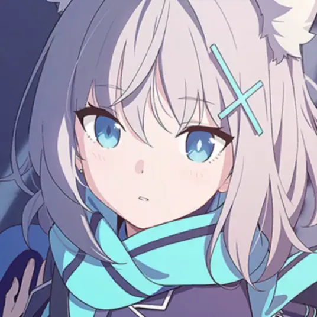

Blue Archive
蔚蓝档案
蔚蓝档案是一款由韩国yostar游戏公司研发的视觉小说类游戏，以其精美的画面和丰富的剧情而受到玩家喜爱;
玩家可以在游戏中体验到丰富的故事情节和多样的角色发展，还拥有丰富的社交系统和多人合作模式。
Blue Archive is a visual novel game developed by Korean game company Yostar, known for its beautiful graphics and rich storyline.
Players can experience a variety of storylines and character development, as well as a rich social system and multiplayer.